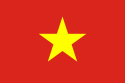
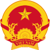

VIỆT NAM
Việt Nam, tên gọi chính thức là Cộng hòa Xã hội chủ nghĩa Việt Nam, là quốc gia nằm ở cực Đông của bán đảo Đông Dương thuộc khu vực Đông Nam Á, giáp với Lào, Campuchia, Trung Quốc, Biển Đông và vịnh Thái Lan. Quốc gia này có chung đường biên giới trên biển với Thái Lan qua vịnh Thái Lan và với Trung Quốc, Philippines, Indonesia, Brunei, Malaysia qua Biển Đông.
Việt Nam có diện tích 331.212 km², đường biên giới trên đất liền dài 4.639 km, đường bờ biển trải dài 3.260 km, dân số ước tính vào khoảng 98 triệu người[9] với 54 dân tộc trong đó người Kinh chiếm đa số. Thủ đô của Việt Nam là thành phố Hà Nội, thành phố đông dân cũng như có quy mô GRDP lớn nhất là Thành phố Hồ Chí Minh (ngày nay vẫn thường được gọi phổ biến với tên cũ là Sài Gòn).[10] Việt Nam tuyên bố chủ quyền đối với hai thực thể địa lý tranh chấp trên Biển Đông là các quần đảo Hoàng Sa (nhưng không kiểm soát trên thực tế) và Trường Sa (kiểm soát một phần).
Các nghiên cứu và bằng chứng khai quật khảo cổ học cho thấy rằng lãnh thổ Việt Nam đã có xuất hiện con người sinh sống sớm nhất từ thời đại đồ đá cũ. Lịch sử Việt Nam cổ đại bắt đầu với nhà nước Văn Lang và tiếp đó là Âu Lạc, lấy trung tâm là trung du và đồng bằng sông Hồng cùng các vùng ven biển lân cận. Âu Lạc bị nhà Triệu từ phương Bắc thôn tính vào đầu thế kỷ thứ 2 TCN, sau đó, Việt Nam trở thành một bộ phận của các triều đại phong kiến Trung Quốc trong hơn một thiên niên kỷ. Chế độ quân chủ độc lập được tái lập tại đây với vị vua Ngô Quyền – sau khi ông giành chiến thắng quyết định trước quân Nam Hán trong Trận Bạch Đằng vào năm 938. Sự kiện này mở đường cho các triều đại độc lập kế tiếp và trong suốt giai đoạn lịch sử trung đại, quốc gia này không chỉ giành chiến thắng trước các cuộc chiến tranh xâm lược từ phương Bắc mà còn dần được mở rộng về phía nam. Thời kỳ Bắc thuộc cuối cùng bắt đầu kể từ khi nhà Minh (Trung Quốc) đánh bại nhà Hồ năm 1407 và kết thúc vào năm 1427 sau chiến thắng của nghĩa quân Lam Sơn do vua Lê Lợi lãnh đạo.
Sang đến thời kỳ cận đại, nhà Nguyễn – triều đại phong kiến chuyên chế cuối cùng của Việt Nam suy yếu khiến cho quốc gia này bị Đế quốc Pháp đô hộ vào cuối thế kỷ 19. Trong giai đoạn này, lãnh thổ Việt Nam bị sáp nhập cùng với Lào và Campuchia – hình thành Liên bang Đông Dương thuộc Pháp. Thời kỳ Pháp thuộc bị gián đoạn và quyền lực của người Pháp bị loại bỏ khi Đế quốc Nhật Bản tiến hành tấn công, xâm lược và chinh phục phần lớn các quốc gia trong khu vực Đông Nam Á. Nhật Bản thay thế Pháp thiết lập chính phủ bù nhìn bản địa nhưng chỉ kiểm soát được lãnh thổ Đông Dương nói chung cũng như Việt Nam nói riêng trong một khoảng thời gian ngắn. Sau khi Nhật Bản thua trận và đầu hàng Đồng Minh, chủ quyền Đông Dương được các cường quốc thắng trận tạo điều kiện cho Đế quốc Pháp thu hồi. Kết thúc chiến tranh thế giới thứ hai, Việt Nam tiếp tục trải qua nhiều biến động quân sự - chính trị - ngoại giao với sự kiện can thiệp trên danh nghĩa giải giáp quân đội Nhật Bản của các lực lượng quân sự thuộc khối Đồng Minh bao gồm Anh, Pháp (miền Nam) cùng Trung Hoa Dân Quốc (miền Bắc). Nhà nước Việt Nam Dân chủ Cộng hòa ra đời khi Hồ Chí Minh tuyên bố độc lập vào năm 1945, sau thành công của Cách mạng Tháng Tám. Việt Nam Dân chủ Cộng hòa chống lại Pháp và Quốc gia Việt Nam trong Chiến tranh Đông Dương lần thứ nhất và giành chiến thắng. Sau năm 1954, quốc gia này bị chia cắt thành hai vùng tập kết quân sự, lấy ranh giới là vĩ tuyến 17. Xung đột ngày càng gia tăng dẫn tới Chiến tranh Việt Nam, trong đó có sự can thiệp sâu rộng của quân đội Hoa Kỳ cùng các nước đồng minh hỗ trợ cho chính thể Việt Nam Cộng hòa/Quân lực Việt Nam Cộng hòa và cuối cùng kết thúc với chiến thắng của Việt Nam Dân chủ Cộng hòa cùng Cộng hòa Miền Nam Việt Nam/Mặt trận Dân tộc Giải phóng Miền Nam Việt Nam (với nòng cốt là Quân Giải phóng miền Nam Việt Nam) vào năm 1975.
Giai đoạn sau khi miền Bắc và miền Nam Việt Nam được tái thống nhất trở thành một nhà nước xã hội chủ nghĩa với một chính phủ đơn nhất vào năm 1976, Việt Nam tiếp tục bị cô lập, gặp khó khăn về kinh tế, chính trị, ngoại giao sau sự sụp đổ và tan rã của đồng minh Liên Xô cùng Khối phía Đông, các lệnh trừng phạt, cấm vận từ phía Hoa Kỳ[11], những xung đột tại Campuchia, biên giới giáp Trung Quốc và hậu quả của chính sách kinh tế bao cấp sau nhiều năm áp dụng, duy trì. Năm 1986, Đảng Cộng sản ban hành một loạt cải cách kinh tế và chính trị, qua đó chính thức mở cửa nền kinh tế, cơ bản chấm dứt, xóa bỏ bao cấp, tạo điều kiện cho Việt Nam hình thành kinh tế thị trường, hội nhập sâu rộng với thế giới và nền kinh tế toàn cầu. Các cải cách đổi mới thành công kết hợp cùng quy mô dân số lớn đưa Việt Nam trở thành quốc gia có tốc độ tăng trưởng GDP cao, liên tục được xếp hạng trong nhóm các nước đang phát triển có tốc độ tăng trưởng kinh tế nhanh nhất trên thế giới, được kỳ vọng sẽ trở thành 'Hổ mới châu Á' trong tương lai gần.[12][13][14] Tuy nhiên, quốc gia này vẫn đang tiếp tục phải đối mặt với những thách thức bao gồm: tham nhũng[15][16][17], tội phạm gia tăng[18][19][20], ô nhiễm môi trường[21][22], nghèo đói[23][24][25], phúc lợi xã hội không đầy đủ[26][27] cùng những chỉ trích của phương Tây về hồ sơ nhân quyền liên quan đến các vấn đề tôn giáo, kiểm duyệt truyền thông, hạn chế các nhóm ủng hộ nhân quyền và các quyền tự do dân sự.[28] Tính đến năm 2020, Việt Nam đã thiết lập quan hệ ngoại giao với 189 quốc gia[29] và là thành viên của nhiều tổ chức quốc tế, trong đó nổi bật như: Liên Hợp Quốc, Hiệp hội các quốc gia Đông Nam Á (ASEAN), Diễn đàn Hợp tác Kinh tế Châu Á – Thái Bình Dương (APEC) và Tổ chức Thương mại Thế giới (WTO).
QUỐC KỲ
QUỐC HUY
Tìm hiểu chi tiết tại đây.